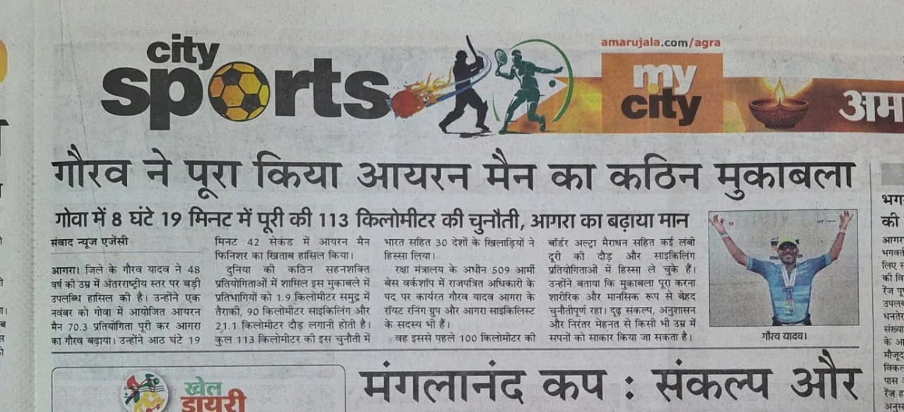

My Athlete Legacy / 06
Media Coverage
A sporting milestone shared with the city.
Amar Ujala · Agra City Sports
“गौरव ने पूरा किया आयरन मैन का कठिन मुकाबला”

The uploaded newspaper clipping reports the Goa finish in 8 hours, 19 minutes and 42 seconds and describes the swim, cycling and running challenge.
Source: uploaded newspaper clipping. Publication date is not visible in the supplied image.